中国国家基础地理信息数据
Basic Geographic Information Data of China
本站提供下载的是原始矢量数据，不是最终地图制图，其与符号化后的地图在可视化表达上存在一定的差异。因此，如果利用下载的地理信息数据进行地图编制，应当严格执行《地图管理条例》有关规定；编制的地图如需向社会公开的，还应当依法履行地图审核程序。
特别提示：本页展示的地图为数据预览图，非公开出版地图，未进行制图编辑，请勿另作他用。
特别提示：本页展示的地图为数据预览图，非公开出版地图，未进行制图编辑，请勿另作他用。
基础GIS数据
中国国家基础地理信息数据（GIS 数据），包括中国省级、县级行政界线、各级河流水系、主要公路铁路、世界行政边界图等矢量数据，数据年份应该是2010年前的，比例尺为1:100万，可免费打包下载。该数据集是在国家基础地理信息网站改版之前下载获取，质量较好！
如果要下载全球基础地理数据，可以访问全球1:100万基础地理数据 （点击进入）
基础GIS数据列表（2010年）
| 数据名称 | 缩略图(数据示例图) | 数据类型 | 数据下载 |
|---|---|---|---|
| 世界行政区划 |  |
ESRI Shapefile | Polygon | |
| 中国省级行政区划 |  |
ESRI Shapefile | Polygon | |
| 中国地市级行政区划 |  |
ESRI Shapefile | Polygon | |
| 中国县级行政界线 |  |
ESRI Shapefile | Polygon | 前往下载 （按省份下载） |
| 中国县级居民点 |  |
ESRI Shapefile | Point | |
| 中国国界 | 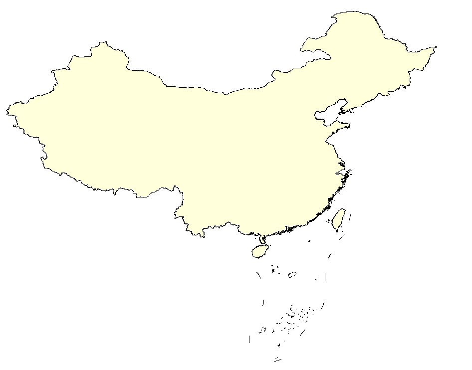 | ESRI Shapefile | Polygon | |
| 中国陆地国界与海岸线 | 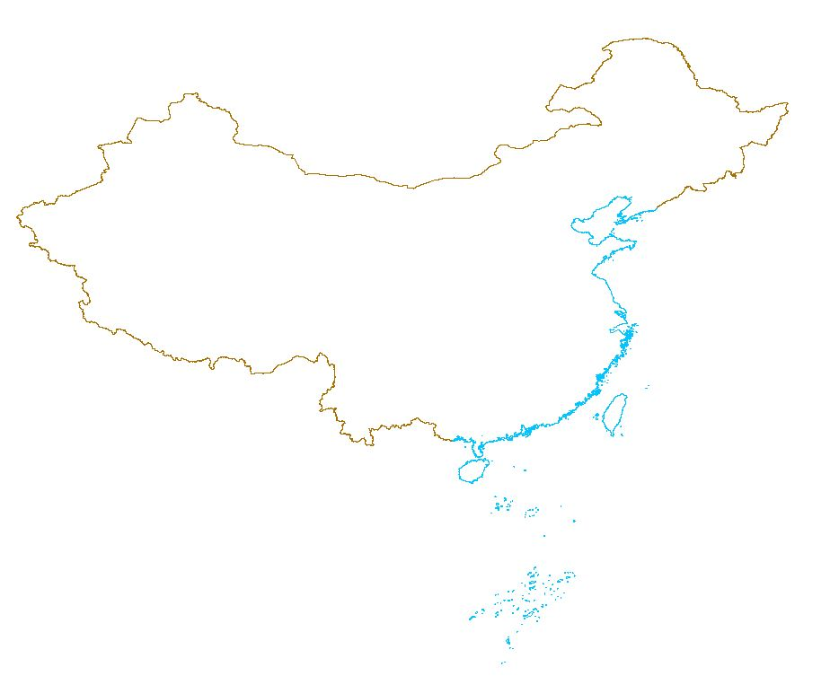 | ESRI Shapefile | Polygon | |
| 南海诸岛及九段线 |  |
ESRI Shapefile | Polyine | |
| 一级河流 |  |
ESRI Shapefile | Polygon ESRI Shapefile | Polyline |
|
| 三级及以上河流 |  |
ESRI Shapefile | Polygon ESRI Shapefile | Polyline |
|
| 四级河流 |  |
ESRI Shapefile | Polygon ESRI Shapefile | Polyline |
|
| 五级河流 |  |
ESRI Shapefile | Polygon | |
| 主要铁路 |  |
ESRI Shapefile | Polyline | |
| 主要公路 |  |
ESRI Shapefile | Polyline |
使用数据时需要注意，数据默认投影坐标为WGS84，若出现投影未定义情况时，可定义为WGS84坐标
如果遇到任何数据问题，如坐标不匹配、文件损坏等，请在下方评论区留言，我将及时更新，十分感谢您的支持~
建议使用Google浏览器，IE内核浏览器可能不正常显示下载按钮等！
全国1:100万省级与地市级行政区划
提供2015年和2020年全国各省省级与地市级行政区划矢量数据免费下载，该数据比例尺为1:100万。
默认下载最新的（2020年）数据，可通过选择年份，下载不同年份的数据。
各省行政区划数据列表（2015年、2020年）
| 编号 | 省级 | 缩略图 | 数据类型 | 选择年份 | 数据下载 省界 | 地市界 |
|---|
2015年全国各省行政区划矢量数据，已全部上传
如果遇到数据问题（缺失，有误等），可以在页面下方评论区留言！
建议使用Google浏览器，IE内核浏览器可能不正常显示下载按钮等！
全国1:100万县级行政区划
最新处理制作了1:100万比例尺的2015年至2021年多年份的全国县级行政区划数据，并持续更新中，如果有需要可以先联系邮箱 gispie@163.com、QQ 2783343898或新浪微博私信@斩之浪，获取下载口令~
如果对年份没要求，可免费下载2010年县级行政区划矢量数据
1:100万县级行政区划示例图
| 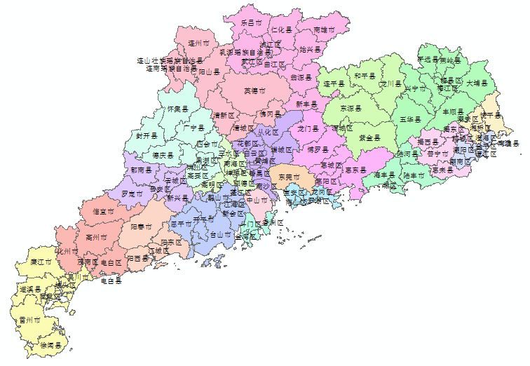 | 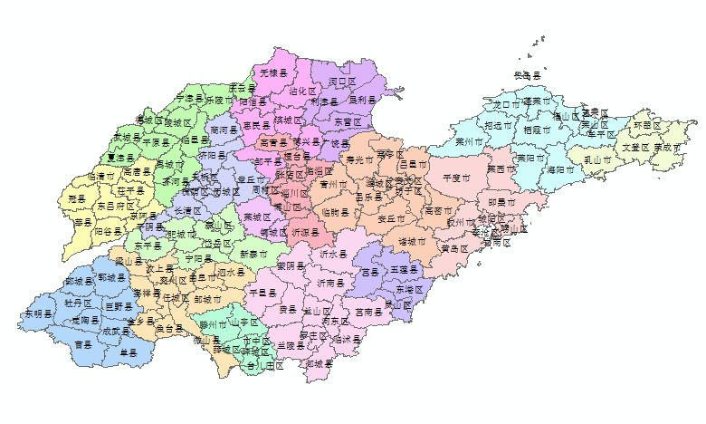 | 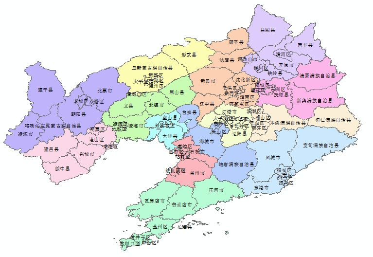 | 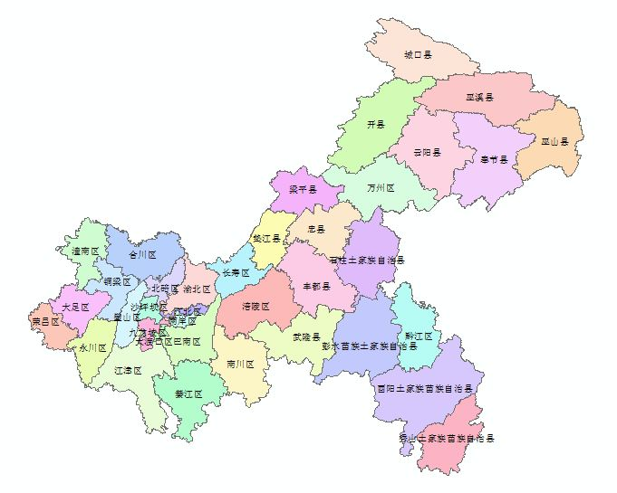 |
该数据为“非共享”数据，不免费提供数据下载链接，需要先邮件联系，获取共享口令，流程详见本站数据共享说明
该数据已上架淘宝店铺：蹉跎的点线面
1:100万全国县级行政区划数据列表
全国1:100万乡镇行政区划
2015年、2018年和2020年全国乡镇行政区划数据，如果有需要可以先联系邮箱 gispie@163.com、QQ 2783343898 或新浪微博私信@斩之浪，获取下载口令~
1:100万乡镇行政区划示例图
| 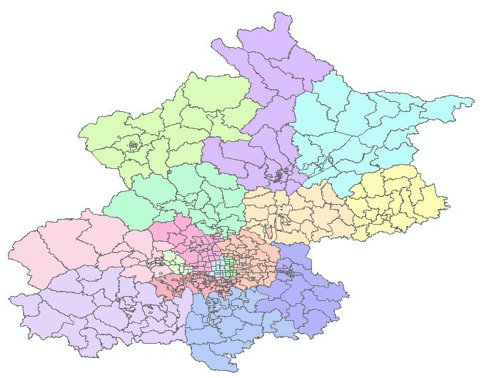 | 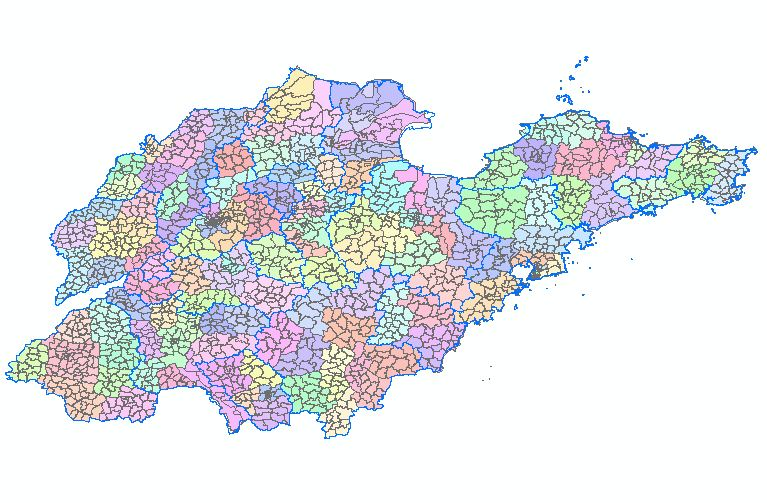 | 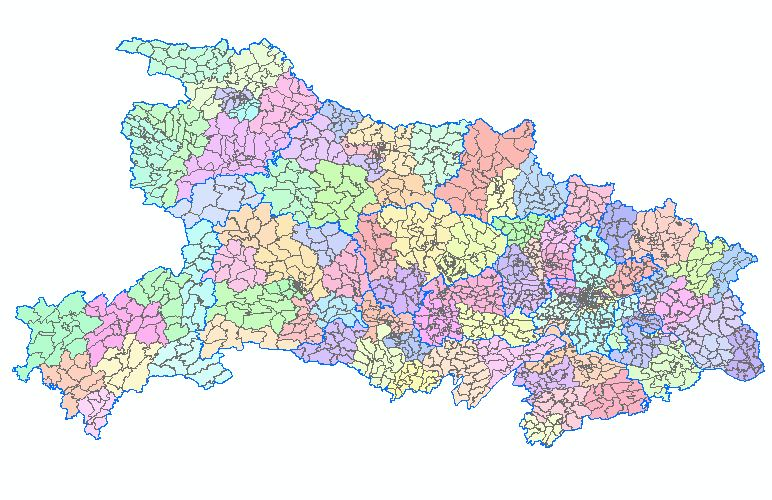 | 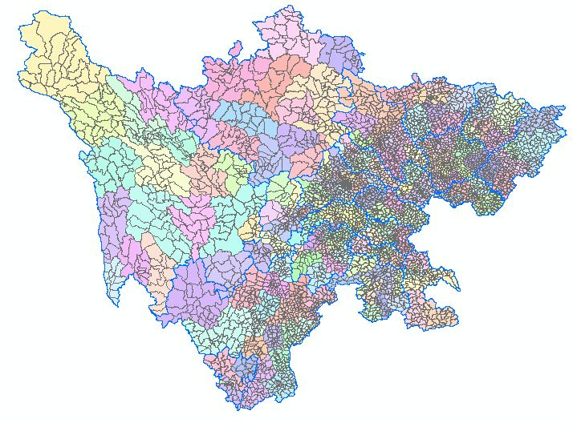 |
该数据为“非共享”数据，不免费提供数据下载链接，需要先邮件联系，获取共享口令，流程详见本站数据共享说明
该数据已上架淘宝店铺：蹉跎的点线面
1:100万全国乡镇行政区划数据
全国乡镇、农村居民点数据
本站提供2015年全国乡镇级和2016-2020年全国村级居民点分布数据，其中行政村点数据有详细到村级的行政代码，可以按县级（或地市级）区划范围申请下载，地市级、省级、全国范围数据下载可另行商议。
关于村级矢量点数据的更多介绍，可以访问全国五级行政区划及村级居民点数据 （点击进入）
该数据为“有限共享”数据，不直接提供数据下载链接，需申请数据共享，获取共享口令，流程详见本站数据共享说明
该数据已上架淘宝店铺：蹉跎的点线面
全国居民点数据列表
| 名称 | 年份 | 示例图 | 点数量 | 类型 | 下载口令 | 下载 |
|---|---|---|---|---|---|---|
| 乡镇级 居民点 | 2020 | 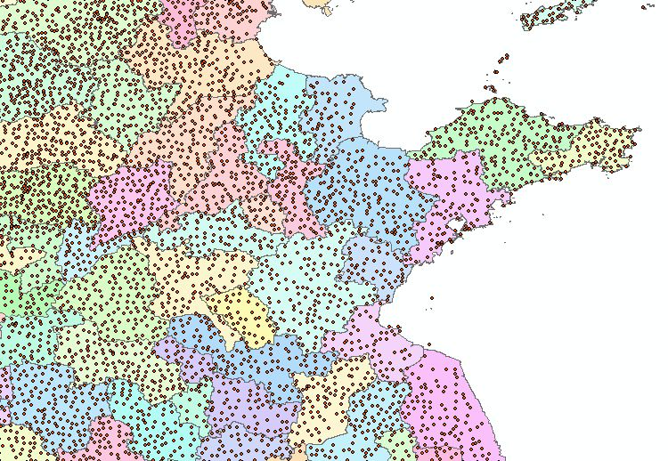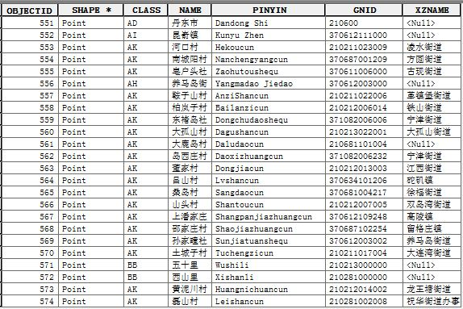 | 3.7万 | ESRI Shapefile Point | 前往下载 | |
| 农村 居民点 | 2015 | 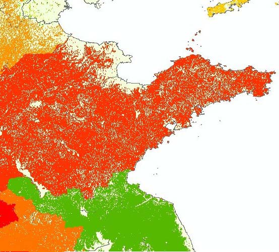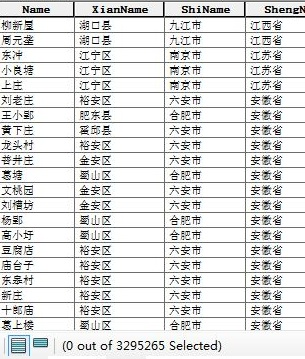 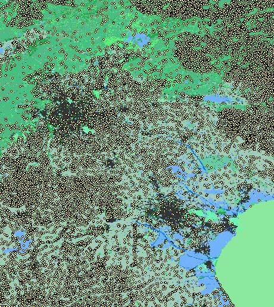 | 329.5万 | ESRI Shapefile Point | ||
| 行政村 居民点 | 2017 | 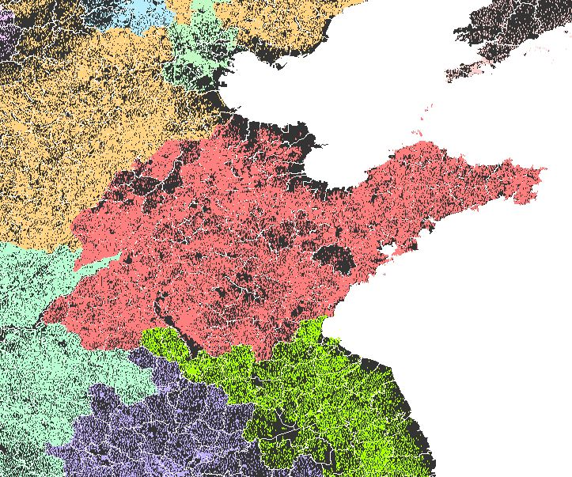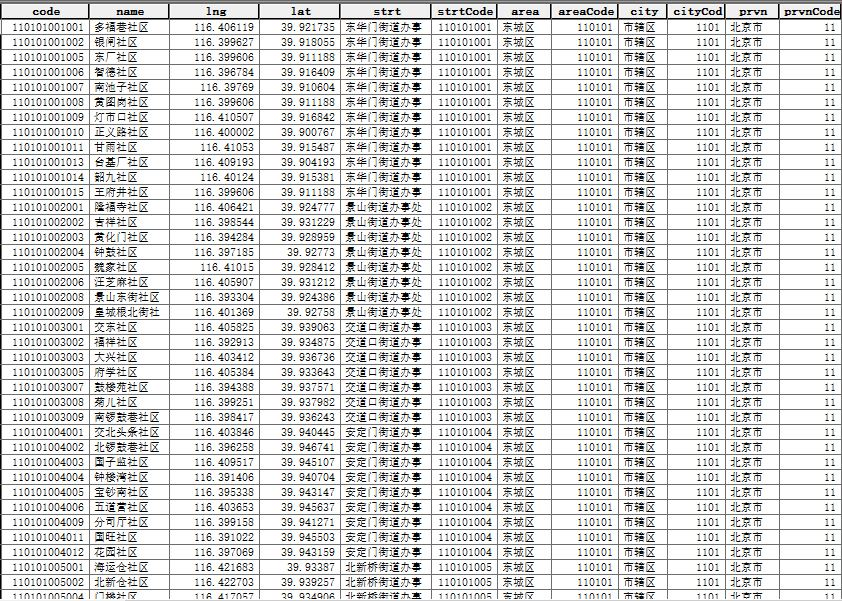 | 67.4万 | ESRI Shapefile Point | ||
| 行政村 居民点 | 2018 | 66.9万 | ESRI Shapefile Point | |||
| 行政村 居民点 | 2019 | 65.8万 | ESRI Shapefile Point | |||
| 行政村 居民点 | 2020 | 63.4万 | ESRI Shapefile Point |
关于村级矢量点数据的更多介绍，可以访问全国五级行政区划及村级居民点数据 （点击进入）
县级区划数据分省下载
按省级区划下载2010年全国县级行政区划矢量数据~
1:100万全国县级行政区划数据列表（2010年）
| 编号 | 省级 | 缩略图 | 数据类型 | 数据下载 |
|---|
全国县级行政区划矢量数据，已全部上传
如果遇到数据下载问题、数据解压问题、数据质量问题等，或需要的数据不在列表中，可以在页面下方评论区留言，也可以通过邮箱（gispie@163.com）联系！
建议使用Google浏览器，IE内核浏览器可能不正常显示下载按钮等！
Fighting, GISer!
最新博文